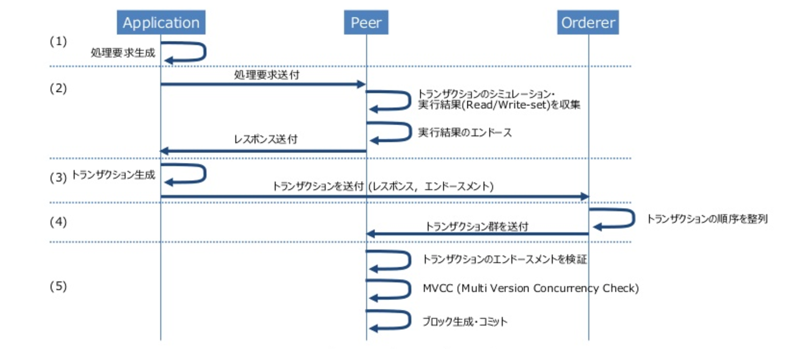

Hyperledger Fabricアーキテクチャ¶
Hyperledger Fabricは」基本的に」Dockerのコンテナ技術を用いてP2Pネットワークを構成するツールである
Vagrantでも利用可能だが、公式側があまり推奨していない
注釈
Hyperledger Fabricにおいて「ピア」や「ノード」というのは、ひとつのDockerコンテナを指す
P2Pネットワークとはコンテナ間のネットワーク
まず、ネットワークを構成する様々な役割のピアについて紹介する
主要登場人物¶
主要な役割を持ったノードについて説明をしていく
- Client
- CA
- Endorser
- Orderer
- Peers
Client
Clientはここでは操作者を指す
ネットワークに対してトランザクションを要求する人物のこと
CA
認証局のこと
CAにてユーザー登録をしておくことで、トランザクションを要求してきたClientが正しい操作者であるか判断する
Hyperledger Fabricはプライベート・ネットワークを想定しているので、誰彼構わずトランザクションを要求できない
Endorser
CAでもOrdererでもない通常のピア
ネットワーク内でEndorser(承認者)の役割を果たす
何に対する承認かというと、Clientが要求したトランザクションが正しい要求であるかどうかの承認である
Orderer
Endorserによって承認されたトランザクションをアルゴリズムに従って並び替え、ブロックを作成するピア
Peer
通常のピア
各ピアにはチェーンコードとLedger(ブロックチェーンとワールドステート)が存在する
ピア同士はゴシップ・プロトコルという技術を用いて互いの情報を同期していく
注釈
ブロックチェーンとは、言い換えればトランザクションの履歴のこと
注釈
ワールドステートとは、ブロックチェーンがトランザクションの履歴であったのに対して、その時点でのデータの状態である
あくまで現在のDBの状態しかわからないので、一つ前のトランザクションなどを知ることはできない
各ノードの紹介が済んだが、アーキテクチャ内でどのようにピア同士が関わっていくのか？
それはトランザクションの流れを追うことで明確になる
よって以下ではトランザクションの流れを説明する
トランザクション・フロー¶
概要図
{kind=link}

Clientがトランザクションを作成し、ネットワークに対して要求するとまずEndorserに運ばれる

Endorserでは
1) トランザクション形式が正しいかどうか
2) 既に処理済みのトランザクションではないかどうか(リプレイアタック防止)
3) Clientの署名が正しいかどうか
4) Clientにトランザクションを要求する権限があるかどうか
を確認する
確認が取れると処理内容をEndorser自身がシュミレートする
注釈
Endorserは通常ピアなのでチェーンコードとワールドステートを持っているので実行可能
シュミレートした結果をトランザクションに書き込み承認し、Clientに返す
シュミレート結果を書き込んでいるので、トランザクションが承認されてブロックが全ピアに運ばれた際に各ピアがチェーンコードを実行する必要がない

Clientは返されたトランザクションを今度はOrdererに送る
Ordererではトランザクションを受取り、並び替え、ブロックに変えてピアに対して送る


ピアは受け取ったブロックをブロックチェーンに加え、既にシュミレートした際の結果をワールドステートに書き込む

以上がトランザクションの流れとアーキテクチャの説明になる
参考¶
より詳細を知りたい方は 公式ドキュメント を参照してほしい
用語も英語からの翻訳なのでそちらも気になる方は 公式ドキュメントのGlossary を参照